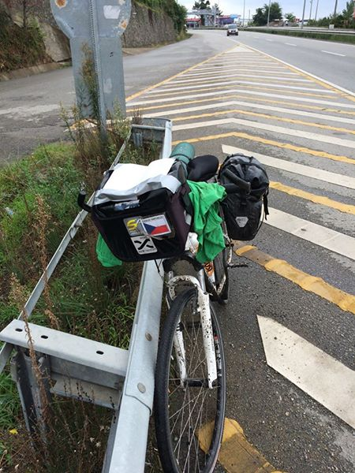

Když nemůže hora k Mohamedovi, musí Mohamed k hoře, jak praví české přísloví. Jen na to nemám čas jindy než za jízdy, takže si musím knihu s frázemi přilepit lepicí páskou k přední brašně. Je to fajn, cesta rychle utíká a naučím se toho za celý den docela dost. Navíc třeba číslovky stačí umět jen do 20, protože nic dražšího stejně nekupuji. Jedinou nevýhodu vidím v tom, že nemůžu tolik sledovat cestu, takže jsem dnes lepil 6. a 7. turecký defekt, ale to za to stojí.
Jak se učím turecky 14.9.2016
Protože jsem si nedávno nechtíc objednal dvě večeře, a protože jsem už ztratil naději, že se tady s někým domluvím, začal jsem se učit turecky.
